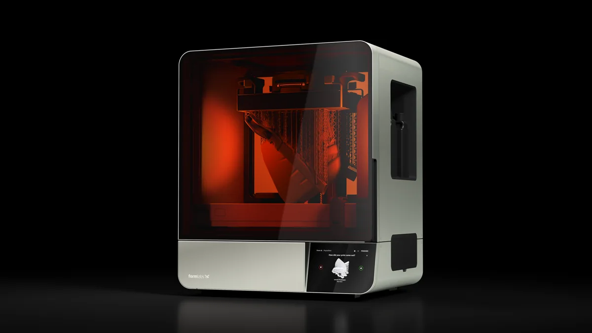

Build volume
353 x 196 x 350 mm (Formlabs quotes 24.2 litres)
Advertised dimensions; check usable space and variants.
Sources & dates
- Formlabs resin printer technical specifications (Form 4 / 4B / 4L) · 2026-08 · vendor
Large-format Form 4 with a 24.2 litre build volume, 46 micron pixels and twin resin cartridges.

353 x 196 x 350 mm (Formlabs quotes 24.2 litres)
Advertised dimensions; check usable space and variants.
Low Force Display masking LCD with a 46 um pixel size. Formlabs does not publish the screen diagonal or pixel count
Published resin-display specification.
Not recorded in this catalog.
Dated listing, not a live offer. Read the configuration and region.
Understand the hardware, explore compatible changes and find a diagnostic starting point when something goes wrong. Expand the specification sections for every recorded value, condition and original reference.
Dimensions, construction and the hardware that moves the print.
| Property and unit | Published value and conditions | Sources and dates |
|---|---|---|
| Manufacturer & exact marketed model name (verify the exact product identity first) | Formlabs Form 4L | 1 source
|
| Variants & sibling models — and how to tell them apart (spec-contamination risk) | Same Low Force Display engine as the Form 4 but a different machine on every physical figure: 353 x 196 x 350 mm vs 200 x 125 x 210, 46 um vs 50 um pixels, 58.5 kg vs 18.3 kg, 900 W vs 480 W, two resin cartridges vs one. Formlabs lists Basic, Premium and Complete packages, whose prices are not printer-only prices, and no printer-only USD figure was found on a live listing | 1 source
|
| Property and unit | Published value and conditions | Sources and dates |
|---|---|---|
| Build volume X×Y×Z (mm) — advertised vs actually usable | 353 x 196 x 350 mm (Formlabs quotes 24.2 litres) | 1 source
|
| Machine footprint (mm) & clearance needed (cable/spool overhang) | 664 x 528 x 794 mm | 1 source
|
| Net weight (kg) | 58.5 kg | 1 source
|
| Enclosure: open / enclosed; panel material; door/lid | Enclosed cabinet with a UV-blocking cover. Operating temperature 18-28 C | 1 source
|
| Property and unit | Published value and conditions | Sources and dates |
|---|---|---|
| Kinematics (bedslinger i3 / CoreXY / other) | Masked stereolithography (MSLA) with the Low Force Display engine; straight-lift peel | 1 source
|
Extrusion, heating, leveling and material handling.
| Property and unit | Published value and conditions | Sources and dates |
|---|---|---|
| Officially supported filament list | Formlabs resin range as for the Form 4; biocompatible materials require a B-series machine | 1 source
|
Use the manufacturer’s firmware and cartridge-identification/RFID checks before following the model-specific hardware replacement branch.
Applies to: Form 4L generation; do not assume Form 4 and Form 4L cartridge-floor service parts are interchangeable.
The manufacturer’s downloadable mount stores the larger platform; its material guidance accounts for the heavier assembly.
Applies to: Form 4L generation; Formlabs recommends a strong, stiff material such as Nylon 12 GF for this mount.
The official pump replaces the cartridge supply with a supported 5 L resin-container workflow, reducing cartridge changes.
Applies to: Compatible with Form 4L; check the specific resin’s pumping-system eligibility and material-change procedure.
| Property and unit | Published value and conditions | Sources and dates |
|---|---|---|
| Masking LCD | Low Force Display masking LCD with a 46 um pixel size. Formlabs does not publish the screen diagonal or pixel count | 1 source
|
| Light source | Backlight unit with uniform-wavelength LEDs behind collimating lenses, with integrated cooling | 1 source
|
| Layer height range | 25-200 um | 1 source
|
| Resin vat & feeding | Two next-generation resin cartridges. No vat capacity published | 1 source
|
Firmware, controls, connections and calibration.
| Property and unit | Published value and conditions | Sources and dates |
|---|---|---|
| Input voltage (110/220 V, switch or auto) | 100-240 VAC, 9 A, 50/60 Hz, 900 W | 1 source
|
| Total rated power draw | 900 W | 1 source
|
A purchased, per-printer manufacturer activation enables supported third-party 405 nm resin workflows; this is not replacement community firmware.
Applies to: Form 4L requires at least firmware 1.10.0 and PreForm 3.41.0, plus activation connectivity.
| Property and unit | Published value and conditions | Sources and dates |
|---|---|---|
| Firmware base & current version (Klipper fork / Marlin fork / proprietary) | Proprietary; print preparation is PreForm | 1 source
|
| Property and unit | Published value and conditions | Sources and dates |
|---|---|---|
| Display: size, type, touch? | 7-inch interactive touchscreen, 1280 x 800 (control panel — not the masking LCD, see W1) | 1 source
|
| WiFi (band/standard), Ethernet, USB ports, SD/flash-drive | Dual-band Wi-Fi, Gigabit Ethernet, USB-C 2.0 | 1 source
|
Published safeguards, support terms and independent evidence.
| Property and unit | Published value and conditions | Sources and dates |
|---|---|---|
| Dimensional accuracy measurements (third-party, with numbers) | XY dimensional tolerance +/-0.15% — a manufacturer specification | 1 source
|
This guide presents the catalog’s sourced record for this exact model. Source dates belong to each reference; a page update does not mean every specification has been rechecked.
Prices are dated listing snapshots, with configuration, regional and sale conditions. They are not current offers. Unknown values remain unfilled.
Firmware, variants and available accessories can change. Read the original reference before making a purchase or planning a process.
Firmware, modifications and troubleshooting links are checked against the model and stated hardware or firmware revision. A creator’s compatibility claim is not a fit test by this site. Official troubleshooting describes a diagnostic route; individual reports do not establish a failure rate.